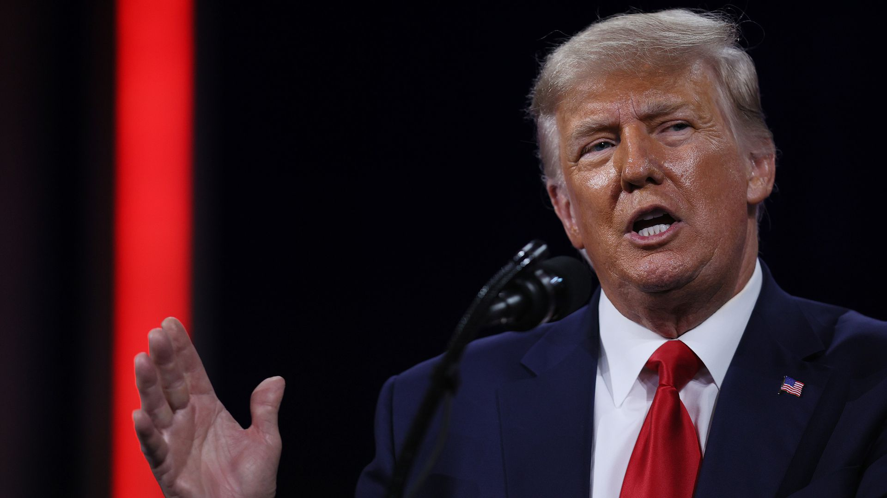

Trump’s former Pentagon chief to testify on “unanswered questions” from Jan.6
Former President Trump's acting Defense Secretary Chris Miller has been called to testify this Wednesday on 'unanswered questions' about the Jan.6 Capitol attack, Democrats on the House Oversight Committee said Monday.
Why it matters: Miller, who Trump appointed to lead the Pentagon after firing Mark Esper following the 2020 election, has said he believes Trump incited the mob on Jan.6 with his speech before the deadly riot.
Details: Miller is scheduled to testify alongside Trump's former Deputy Attorney General Jeffrey Rosen.
Posted On: 2021-05-10T00:00:00
Posted By: Orion Rummler

Content Date: 2021-05-10
Download Date: 2021-05-15
Document ID: L0C04CDCY